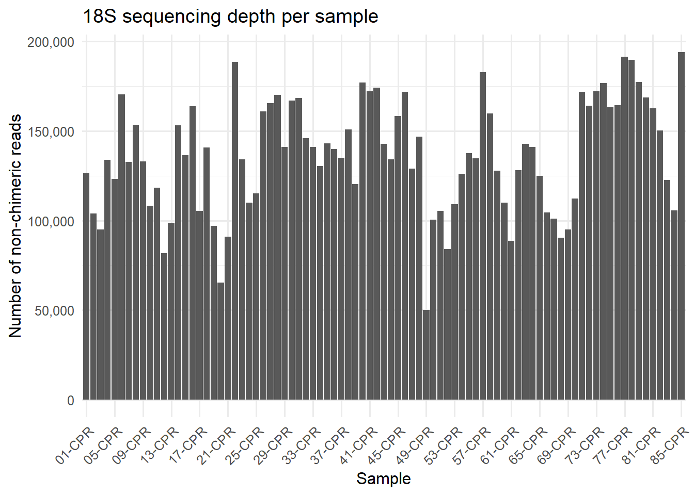
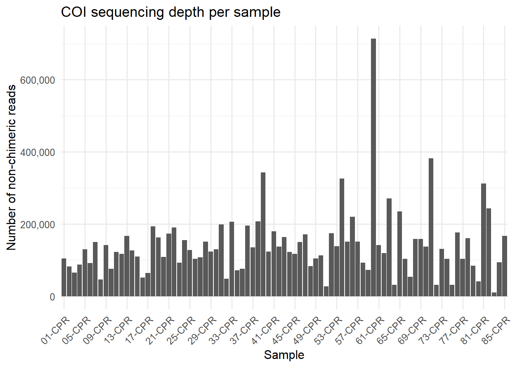
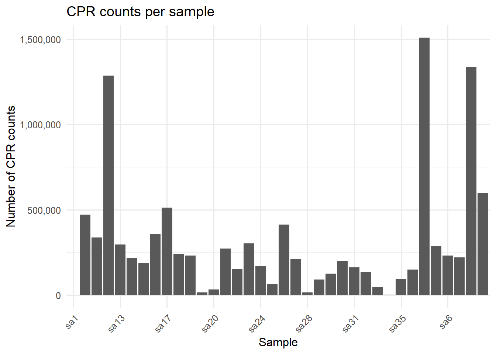
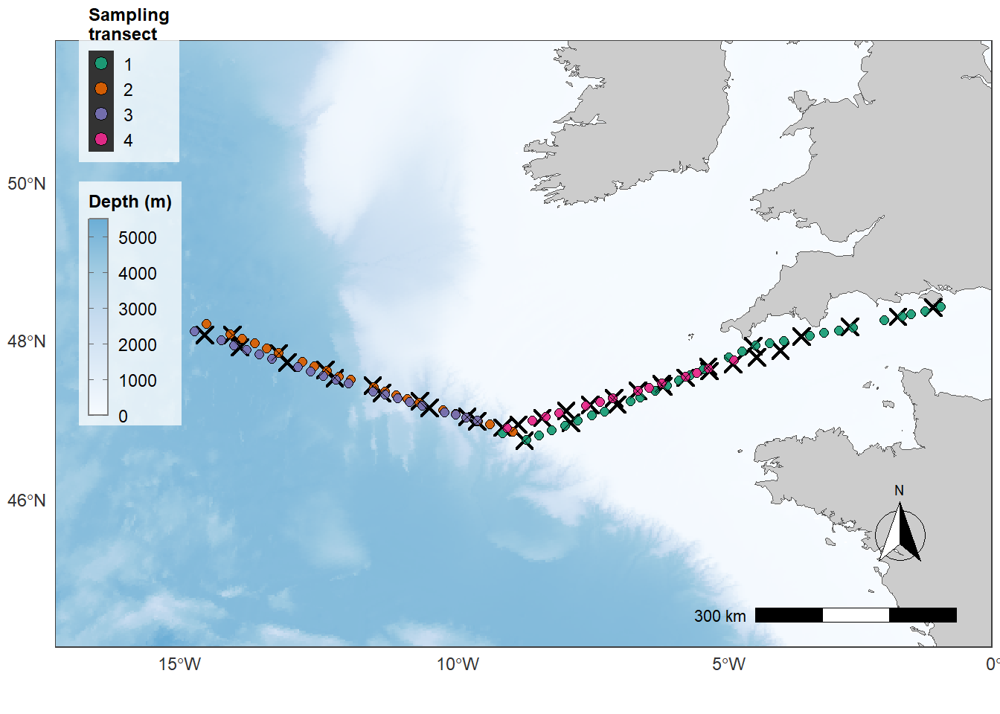
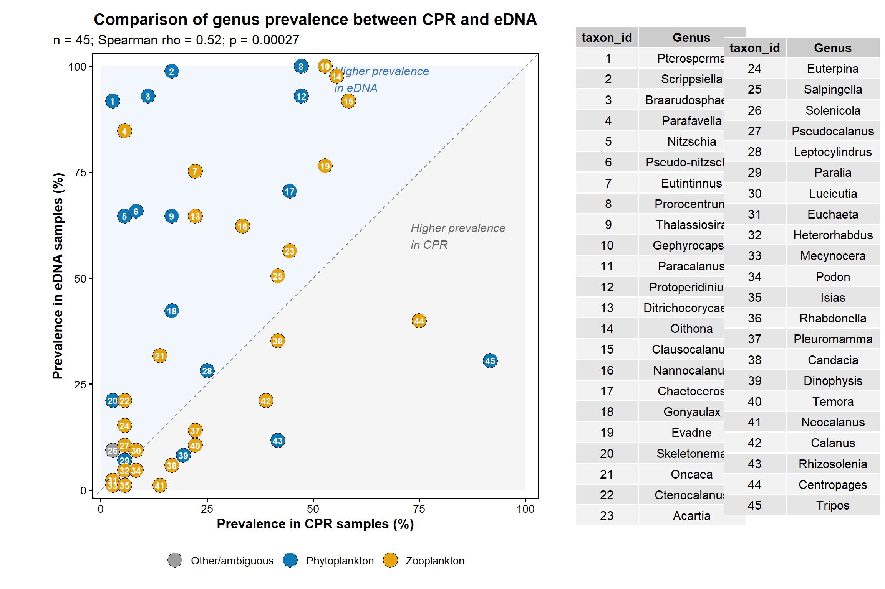
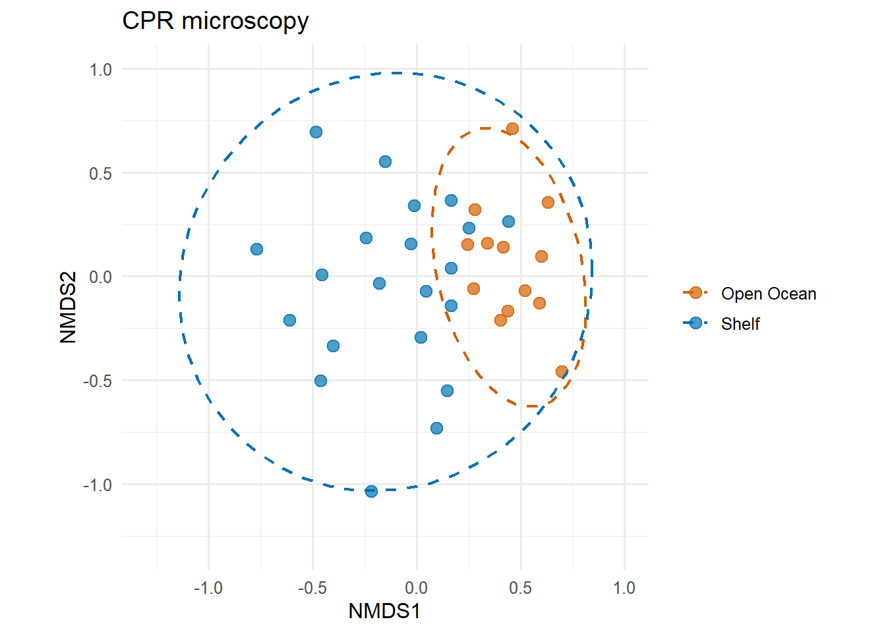
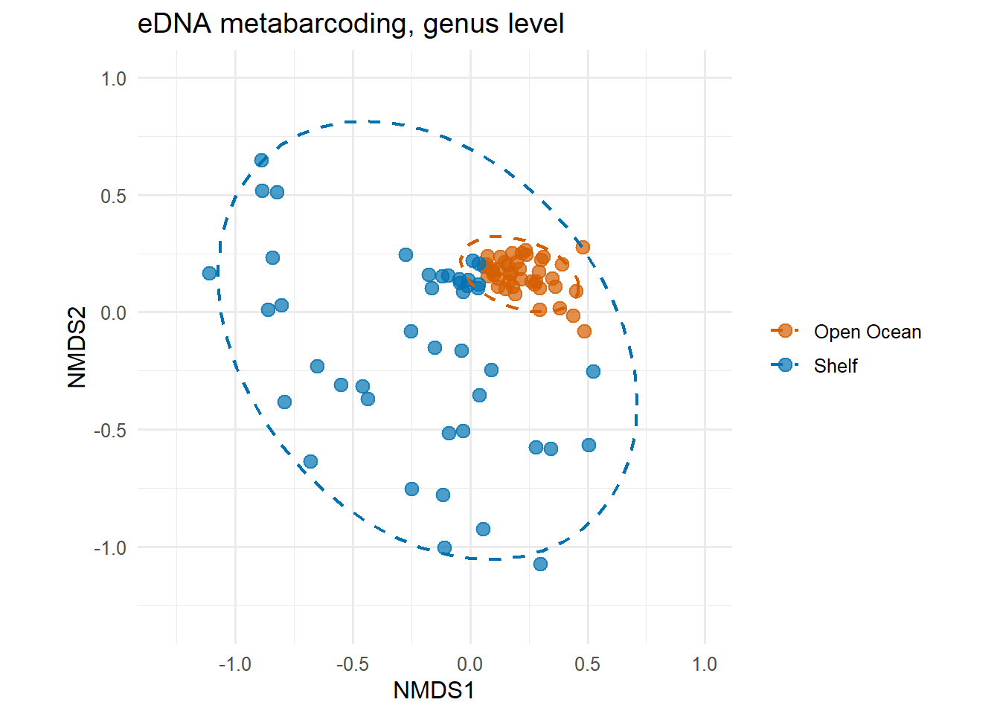
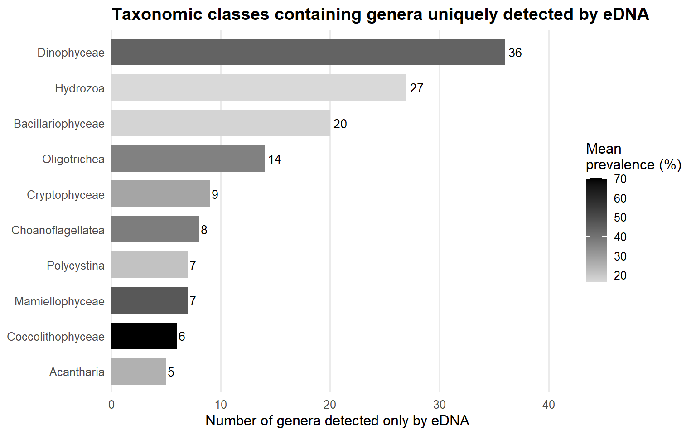

library(tidyverse)
library(readxl)
library(phyloseq)
library(vegan)
library(Biostrings)
library(knitr)
library(kableExtra)
library(gridExtra)
library(patchwork)
library(ggVennDiagram)
library(scales)
library(ggOceanMaps)
library(ggspatial)
library(ggnewscale)
library(cowplot)
set.seed(123)
theme_set(theme_minimal(base_size = 12))Analysis code for the RoCSI-CPR study
Overview
This Quarto document contains the code used to process and compare the RoCSI eDNA metabarcoding dataset with Continuous Plankton Recorder (CPR) microscopy data.
Two metabarcoding markers were analysed:
- 18S rRNA V9: primarily targeting phytoplankton and other protists.
- COI mitochondrial marker: primarily targeting metazoan plankton.
The eDNA and CPR datasets were compared using taxonomic overlap, prevalence across longitudinal sections, and community-level ordination.
Sequencing and bioinformatic workflow
Sequencing summary
| Feature | 18S rRNA V9 | COI |
|---|---|---|
| SSP ID | SSP202877 | SSP200993 |
| Purchase order | 203631529 | P10817-5 |
| Sequencing platform | Illumina MiSeq v2 (2 × 150 bp) | Illumina MiSeq v2 (2 × 250 bp) |
| Target region | 18S V9, 1389F–1510R | COI Leray fragment, m1COIintF–jgHCO2198 |
| Expected amplicon size | ~121 bp | ~313 bp |
| Raw read depth, mean | ~150,000 reads | ~200,000 reads |
| Pre-processing | Cutadapt v4.5 | Cutadapt v1.2.1 + Sickle v1.200 |
| Downstream workflow | Cutadapt → DADA2 → MZG 18S taxonomy | Cutadapt → DADA2 → MZG COI taxonomy |
Primer sets
18S V9
- Forward: 5′ ACACTCTTTCCCTACACGACGCTCTTCCGATCTNNNNN TTGTACACACCGCCC 3′
- Reverse: 5′ GTGACTGGAGTTCAGACGTGTGCTCTTCCGATCT CCTTCYGCAGGTTCACCTAC 3′
COI
- Forward: 5′ ACACTCTTTCCCTACACGACGCTCTTCCGATCTNNNNN GGWACWGGWTGAACWGTWTAYCCYCC 3′
- Reverse: 5′ GTGACTGGAGTTCAGACGTGTGCTCTTCCGATCT TAIACYTCIGGRTGICCRAARAAYCA 3′
Primer removal with Cutadapt
| Parameter | 18S | COI |
|---|---|---|
Forward primer (-g) |
TTGTACACACCGCCC | GGWACWGGWTGAACWGTWTAYCCYCC |
Reverse primer (-G) |
CCTTCYGCAGGTTCACCTAC | TANACYTCNGGRTGNCCRAARAAYCA |
--match-read-wildcards |
yes | yes |
| Minimum overlap | 10 | 20 |
Max error rate (-e) |
0.15 | 0.20 |
--discard-untrimmed |
yes | yes |
--minimum-length |
80 bp | 200 bp |
Both datasets were processed with a marker-specific version of the following command:
cutadapt \
-g <forward_primer> \
-G <reverse_primer> \
--match-read-wildcards \
--overlap <minimum_overlap> \
-e <maximum_error_rate> \
--pair-filter=both \
--discard-untrimmed \
--cores=0 \
-o <trimmed_R1.fastq.gz> \
-p <trimmed_R2.fastq.gz> \
<input_R1.fastq.gz> \
<input_R2.fastq.gz>DADA2 processing
| Parameter | 18S | COI |
|---|---|---|
truncLen |
c(130, 120) |
c(210, 210) |
maxEE |
c(2, 3) |
c(2, 3) |
minLen |
80 | 200 |
minOverlap in mergePairs() |
30 | 90 |
| Reference database | MZG 18S | MZG COI |
NoteReference databases
Taxonomy was assigned with DADA2 using MetaZooGene reference databases:
- 18S:
MZGdada2-18s__T2000000__o00__A.fastq, all microbes and protists, mode A. - COI:
MZGdada2-coi__T4000000__o00__A.fastq, all invertebrates, mode A.
Both markers were processed with the standard DADA2 workflow: filtering, error learning, dereplication, ASV inference, pair merging, chimera removal, and taxonomic assignment.
Setup
Helper functions
# Taxonomic ranks returned by the MZG DADA2 databases.
mzg_ranks <- c(
"Kingdom", "Subkingdom_1", "Subkingdom_2", "Phylum", "Subphylum",
"Subphylum_1", "Superclass", "Class", "Subclass", "Infraclass",
"Superorder", "Order", "Suborder_1", "Suborder_2", "Suborder_3",
"Family", "Subfamily", "Genus", "Subgenus", "Species"
)
clean_mzg_taxonomy <- function(taxa) {
taxa <- as.matrix(taxa)
colnames(taxa) <- mzg_ranks[seq_len(ncol(taxa))]
taxa
}
add_dna_sequences <- function(ps) {
dna <- DNAStringSet(taxa_names(ps))
names(dna) <- taxa_names(ps)
merge_phyloseq(ps, dna)
}
build_marker_phyloseq <- function(datadir, metadata_file, output_file) {
seqtab <- readRDS(file.path(datadir, "seqtab_nochim.rds"))
taxa <- readRDS(file.path(datadir, "taxa.rds")) |> clean_mzg_taxonomy()
metadata <- readRDS(file.path(datadir, metadata_file))
rownames(seqtab) <- sub("_$", "", rownames(seqtab))
ps <- phyloseq(
otu_table(seqtab, taxa_are_rows = FALSE),
sample_data(metadata),
tax_table(taxa)
) |>
add_dna_sequences()
taxa_names(ps) <- paste0("ASV", seq_len(ntaxa(ps)))
saveRDS(ps, output_file)
ps
}
read_depth_plot <- function(ps, title, y_label = "Number of reads") {
tibble(
Sample = sample_names(ps),
Reads = sample_sums(ps)
) |>
ggplot(aes(Sample, Reads)) +
geom_col() +
scale_x_discrete(
labels = \(x) substr(x, 1, 6),
breaks = \(x) x[seq(1, length(x), by = 4)]
) +
scale_y_continuous(labels = label_number(big.mark = ",")) +
labs(title = title, x = "Sample", y = y_label) +
theme(axis.text.x = element_text(angle = 45, hjust = 1))
}
presence_absence <- function(ps) {
otu_table(ps) <- otu_table((otu_table(ps) > 0) * 1, taxa_are_rows(ps))
ps
}
present_taxa_at_rank <- function(ps, tax_rank) {
tax <- as.data.frame(phyloseq::tax_table(ps), stringsAsFactors = FALSE)
if (!tax_rank %in% colnames(tax)) {
stop("Taxonomic rank not found: ", tax_rank)
}
present_ids <- phyloseq::taxa_names(ps)[phyloseq::taxa_sums(ps) > 0]
taxa_values <- tax[present_ids, tax_rank, drop = TRUE]
taxa_values <- taxa_values[
!is.na(taxa_values) &
taxa_values != "" &
taxa_values != "NA" &
taxa_values != "N/A" &
taxa_values != "Unknown"
]
unique(as.character(taxa_values))
}
phyloseq_to_pa_long <- function(ps, method, taxa_keep, tax_rank, lon_var = NULL) {
otu <- as(otu_table(ps), "matrix")
if (!taxa_are_rows(ps)) otu <- t(otu)
otu <- (otu > 0) * 1
tax <- as(tax_table(ps), "matrix") |>
as.data.frame(check.names = FALSE) |>
rownames_to_column("taxa_id")
samples <- as(sample_data(ps), "data.frame") |>
rownames_to_column("SampleID")
if (is.null(lon_var)) {
lon_var <- names(samples)[str_detect(str_to_lower(names(samples)), "^lon$|^longitude$|long")][1]
}
stopifnot(!is.na(lon_var), lon_var %in% names(samples), tax_rank %in% names(tax))
as.data.frame(otu) |>
rownames_to_column("taxa_id") |>
pivot_longer(-taxa_id, names_to = "SampleID", values_to = "pa") |>
left_join(tax, by = "taxa_id") |>
left_join(samples, by = "SampleID") |>
transmute(
method = method,
SampleID = SampleID,
longitude = as.numeric(.data[[lon_var]]),
taxon = as.character(.data[[tax_rank]]),
pa = as.integer(pa > 0)
) |>
filter(!is.na(taxon), taxon %in% taxa_keep)
}
binned_presence_plot <- function(
ps_cpr_pa,
ps_edna_pa,
taxa_keep,
tax_rank,
palette,
lon_min = -16.5,
lon_max = -1,
n_bins = 10
) {
lon_breaks <- seq(lon_min, lon_max, length.out = n_bins + 1)
plot_df <- bind_rows(
phyloseq_to_pa_long(ps_cpr_pa, "CPR", taxa_keep, tax_rank),
phyloseq_to_pa_long(ps_edna_pa, "eDNA", taxa_keep, tax_rank)
) |>
filter(!is.na(longitude), between(longitude, lon_min, lon_max)) |>
mutate(lon_bin = cut(longitude, breaks = lon_breaks, include.lowest = TRUE)) |>
group_by(method, lon_bin, taxon) |>
summarise(pa = as.integer(any(pa == 1)), .groups = "drop") |>
mutate(method = factor(method, levels = c("CPR", "eDNA")))
taxon_levels <- plot_df |>
group_by(taxon) |>
summarise(prevalence = sum(pa), .groups = "drop") |>
arrange(desc(prevalence), taxon) |>
pull(taxon)
bin_mids <- (lon_breaks[-1] + lon_breaks[-length(lon_breaks)]) / 2
mid_labels <- sprintf("%.2f", bin_mids)
names(mid_labels) <- levels(plot_df$lon_bin)
plot_df |>
mutate(
taxon = factor(taxon, levels = taxon_levels),
fill_taxon = if_else(pa == 1, as.character(taxon), NA_character_)
) |>
ggplot(aes(lon_bin, taxon, fill = fill_taxon)) +
geom_tile(width = 0.95, height = 0.9, colour = "grey80") +
facet_wrap(~ method, ncol = 1) +
scale_fill_manual(
values = palette[taxon_levels],
na.value = "white",
breaks = taxon_levels,
limits = taxon_levels,
drop = FALSE,
name = tax_rank
) +
scale_x_discrete(labels = mid_labels) +
scale_y_discrete(limits = rev(taxon_levels)) +
labs(x = "Longitude section, bin midpoint", y = NULL) +
theme(
panel.grid = element_blank(),
strip.text = element_text(face = "bold"),
axis.text.x = element_text(angle = 45, hjust = 1),
axis.text.y = element_blank(),
axis.ticks.y = element_blank()
)
}
calculate_taxon_prevalence <- function(ps, taxa_keep, tax_rank = "Genus", method = NULL) {
otu <- as(otu_table(ps), "matrix")
if (!taxa_are_rows(ps)) otu <- t(otu)
tax <- as(tax_table(ps), "matrix") |>
as.data.frame(check.names = FALSE) |>
rownames_to_column("taxa_id")
out <- as.data.frame(otu > 0) |>
rownames_to_column("taxa_id") |>
pivot_longer(-taxa_id, names_to = "SampleID", values_to = "present") |>
left_join(tax, by = "taxa_id") |>
mutate(taxon = as.character(.data[[tax_rank]])) |>
filter(!is.na(taxon), taxon %in% taxa_keep) |>
group_by(SampleID, taxon) |>
summarise(present = any(present), .groups = "drop") |>
complete(SampleID = sample_names(ps), taxon = taxa_keep, fill = list(present = FALSE)) |>
group_by(taxon) |>
summarise(
n_present = sum(present),
n_samples = n_distinct(SampleID),
prevalence = 100 * n_present / n_samples,
.groups = "drop"
) |>
arrange(desc(prevalence))
if (!is.null(method)) out <- mutate(out, method = method)
out
}
community_matrix <- function(ps, taxrank = NULL) {
if (!is.null(taxrank)) {
ps <- tax_glom(ps, taxrank = taxrank, NArm = TRUE)
}
mat <- as(otu_table(ps), "matrix")
if (taxa_are_rows(ps)) mat <- t(mat)
mat <- (mat > 0) * 1
mat <- mat[rowSums(mat) > 0, colSums(mat) > 0, drop = FALSE]
mat
}
nmds_plot <- function(mat, metadata, title = NULL) {
nmds <- metaMDS(
mat,
distance = "jaccard",
binary = TRUE,
k = 2,
trymax = 200,
autotransform = FALSE,
trace = FALSE
)
scores(nmds, display = "sites") |>
as.data.frame() |>
rownames_to_column("SampleID") |>
left_join(metadata, by = "SampleID") |>
ggplot(aes(NMDS1, NMDS2, colour = Water_masses)) +
geom_point(size = 3, alpha = 0.7) +
stat_ellipse(aes(group = Water_masses), linewidth = 0.8, linetype = "dashed") +
scale_colour_manual(values = c("Open Ocean" = "#D55E00", "Shelf" = "#0072B2")) +
coord_equal(xlim = c(-1.3, 1.0), ylim = c(-1.3, 1.0)) +
labs(title = title, colour = NULL)
}Read tracking
dada2_counts <- read_csv("data/DADA2_counts_table.csv")
colnames(dada2_counts) <- c(
"sample",
"input", "filtered", "nonchim", "reads_retained (%)",
"input", "filtered", "nonchim", "reads_retained (%)"
)
kable(dada2_counts, format = "html", caption = "DADA2 read counts for 18S and COI") |>
add_header_above(c(" " = 1, "18S" = 4, "COI" = 4)) |>
kable_styling(
full_width = FALSE,
bootstrap_options = c("striped", "hover", "condensed")
) |>
scroll_box(height = "400px", width = "100%")| sample | input | filtered | nonchim | reads_retained (%) | input | filtered | nonchim | reads_retained (%) |
|---|---|---|---|---|---|---|---|---|
| 01-CPR_1_ID_1_ | 148213 | 128862 | 126330 | 85.2 | 144059 | 139400 | 104643 | 72.6 |
| 02-CPR_1_ID_2_ | 121841 | 105245 | 103807 | 85.2 | 91034 | 86400 | 82657 | 90.8 |
| 03-CPR_1_ID_3_ | 117632 | 96408 | 94945 | 80.7 | 77206 | 75069 | 65275 | 84.5 |
| 04-CPR_1_ID_4_ | 170195 | 135708 | 133962 | 78.7 | 99005 | 95927 | 88038 | 88.9 |
| 05-CPR_1_ID_5_ | 139036 | 124966 | 123177 | 88.6 | 143700 | 136891 | 130456 | 90.8 |
| 06-CPR_1_ID_7_ | 189844 | 172629 | 170302 | 89.7 | 100258 | 95319 | 91819 | 91.6 |
| 07-CPR_1_ID_8_ | 156940 | 134665 | 132550 | 84.5 | 163332 | 156331 | 150014 | 91.8 |
| 08-CPR_1_ID_9_ | 169359 | 155134 | 153346 | 90.5 | 56907 | 47951 | 46489 | 81.7 |
| 09-CPR_1_ID_10_ | 149202 | 134894 | 132964 | 89.1 | 164215 | 149580 | 141147 | 86.0 |
| 10-CPR_1_ID_12_ | 133358 | 109353 | 108318 | 81.2 | 82507 | 79597 | 75675 | 91.7 |
| 11-CPR_1_ID_13_ | 159171 | 119466 | 118219 | 74.3 | 133207 | 128803 | 122620 | 92.1 |
| 12-CPR_1_ID_14_ | 154920 | 82372 | 81798 | 52.8 | 127207 | 123701 | 117516 | 92.4 |
| 13-CPR_1_ID_15_ | 165533 | 100962 | 98756 | 59.7 | 181637 | 174765 | 167385 | 92.2 |
| 14-CPR_1_ID_16_ | 174055 | 154970 | 153105 | 88.0 | 137952 | 131771 | 126534 | 91.7 |
| 15-CPR_1_ID_18_ | 187464 | 141613 | 136443 | 72.8 | 119723 | 113684 | 109776 | 91.7 |
| 16-CPR_1_ID_19_ | 199073 | 165283 | 163680 | 82.2 | 57654 | 55146 | 51706 | 89.7 |
| 17-CPR_1_ID_20_ | 121858 | 107172 | 105402 | 86.5 | 70524 | 67331 | 64356 | 91.3 |
| 18-CPR_1_ID_21_ | 150714 | 142004 | 140604 | 93.3 | 207441 | 199025 | 193426 | 93.2 |
| 19-CPR_1_ID_22_ | 121155 | 98484 | 96981 | 80.0 | 174619 | 168282 | 162395 | 93.0 |
| 20-CPR_1_ID_23_ | 80435 | 66396 | 65169 | 81.0 | 119162 | 113276 | 109138 | 91.6 |
| 21-CPR_1_ID_24_ | 104984 | 92580 | 90811 | 86.5 | 185903 | 179594 | 173934 | 93.6 |
| 22-CPR_1_ID_26_ | 236346 | 191192 | 188534 | 79.8 | 202369 | 196976 | 190007 | 93.9 |
| 23-CPR_1_ID_27_ | 156485 | 137223 | 134112 | 85.7 | 101725 | 97126 | 92636 | 91.1 |
| 24-CPR_1_ID_28_ | 127353 | 111643 | 109821 | 86.2 | 170221 | 162524 | 155675 | 91.5 |
| 25-CPR_1_ID_29_ | 132416 | 116805 | 115151 | 87.0 | 139384 | 134544 | 127957 | 91.8 |
| 26-CPR_1_ID_30_ | 172100 | 162217 | 160855 | 93.5 | 112727 | 107640 | 104009 | 92.3 |
| 27-CPR_1_ID_31_ | 178342 | 167885 | 165400 | 92.7 | 119777 | 114101 | 108237 | 90.4 |
| 28-CPR_1_ID_32_ | 183002 | 172658 | 170208 | 93.0 | 163244 | 156129 | 151718 | 92.9 |
| 29-CPR_1_ID_34_ | 158952 | 143494 | 141092 | 88.8 | 136586 | 128685 | 124018 | 90.8 |
| 30-CPR_2_ID_1_ | 194720 | 169302 | 166858 | 85.7 | 139205 | 135316 | 129682 | 93.2 |
| 31-CPR_2_ID_3_ | 194060 | 171082 | 168250 | 86.7 | 212589 | 206838 | 198641 | 93.4 |
| 32-CPR_2_ID_4_ | 179081 | 148520 | 145983 | 81.5 | 53088 | 51392 | 48520 | 91.4 |
| 33-CPR_2_ID_5_ | 166777 | 142691 | 140932 | 84.5 | 237970 | 219557 | 206262 | 86.7 |
| 34-CPR_2_ID_6_ | 149638 | 132537 | 130439 | 87.2 | 77732 | 75401 | 71710 | 92.3 |
| 35-CPR_2_ID_7_ | 174663 | 145714 | 143138 | 82.0 | 81727 | 79459 | 75761 | 92.7 |
| 36-CPR_2_ID_9_ | 171703 | 141792 | 139921 | 81.5 | 207408 | 202506 | 195469 | 94.2 |
| 37-CPR_2_ID_10_ | 153543 | 137488 | 134897 | 87.9 | 144427 | 141116 | 135198 | 93.6 |
| 38-CPR_2_ID_11_ | 180363 | 152422 | 150795 | 83.6 | 221320 | 215203 | 207024 | 93.5 |
| 39-CPR_2_ID_12_ | 150636 | 122151 | 120213 | 79.8 | 365807 | 355825 | 342978 | 93.8 |
| 40-CPR_2_ID_13_ | 194784 | 180872 | 177058 | 90.9 | 135022 | 131227 | 124090 | 91.9 |
| 41-CPR_2_ID_15_ | 197928 | 174280 | 172050 | 86.9 | 193553 | 188006 | 180216 | 93.1 |
| 42-CPR_2_ID_16_ | 188135 | 175790 | 174228 | 92.6 | 147285 | 143187 | 137576 | 93.4 |
| 43-CPR_2_ID_17_ | 174942 | 145002 | 142740 | 81.6 | 174113 | 170004 | 163659 | 94.0 |
| 44-CPR_2_ID_18_ | 153984 | 135955 | 134263 | 87.2 | 131276 | 127604 | 122426 | 93.3 |
| 45-CPR_2_ID_19_ | 194789 | 161953 | 158427 | 81.3 | 128156 | 124223 | 117511 | 91.7 |
| 46-CPR_2_ID_21_ | 194608 | 174043 | 171831 | 88.3 | 160623 | 156266 | 149656 | 93.2 |
| 47-CPR_2_ID_22_ | 160941 | 131068 | 128824 | 80.0 | 183353 | 178208 | 171636 | 93.6 |
| 48-CPR_2_ID_23_ | 165931 | 148535 | 146897 | 88.5 | 89249 | 86797 | 83044 | 93.0 |
| 49-CPR_2_ID_24_ | 54433 | 50624 | 50116 | 92.1 | 116076 | 110431 | 104890 | 90.4 |
| 50-CPR_2_ID_25_ | 117781 | 101928 | 100424 | 85.3 | 125438 | 119556 | 113333 | 90.3 |
| 51-CPR_2_ID_27_ | 142756 | 107233 | 105385 | 73.8 | 30590 | 29864 | 27751 | 90.7 |
| 52-CPR_3_ID_1_ | 111133 | 85681 | 83994 | 75.6 | 188262 | 182359 | 174176 | 92.5 |
| 53-CPR_3_ID_3_ | 131736 | 110547 | 109180 | 82.9 | 149259 | 144930 | 138719 | 92.9 |
| 54-CPR_3_ID_4_ | 144501 | 127699 | 125997 | 87.2 | 348047 | 337956 | 325604 | 93.6 |
| 55-CPR_3_ID_5_ | 154373 | 138771 | 137538 | 89.1 | 162972 | 157261 | 151439 | 92.9 |
| 56-CPR_3_ID_6_ | 150617 | 135967 | 134698 | 89.4 | 235204 | 228457 | 220339 | 93.7 |
| 57-CPR_3_ID_7_ | 199644 | 184698 | 182638 | 91.5 | 165181 | 159075 | 150736 | 91.3 |
| 58-CPR_3_ID_9_ | 176030 | 161246 | 159690 | 90.7 | 101926 | 98194 | 93307 | 91.5 |
| 59-CPR_3_ID_10_ | 138047 | 128819 | 127705 | 92.5 | 78978 | 75907 | 72554 | 91.9 |
| 60-CPR_3_ID_11_ | 127549 | 111467 | 109994 | 86.2 | 764251 | 743533 | 713247 | 93.3 |
| 61-CPR_3_ID_12_ | 99488 | 89824 | 88534 | 89.0 | 152306 | 147417 | 141727 | 93.1 |
| 62-CPR_3_ID_13_ | 144619 | 129452 | 128198 | 88.6 | 127896 | 124206 | 119095 | 93.1 |
| 63-CPR_3_ID_15_ | 173235 | 144180 | 142702 | 82.4 | 292673 | 282276 | 271096 | 92.6 |
| 64-CPR_3_ID_16_ | 178289 | 143108 | 141138 | 79.2 | 34818 | 33694 | 31628 | 90.8 |
| 65-CPR_3_ID_17_ | 162707 | 126581 | 124884 | 76.8 | 250949 | 244820 | 234509 | 93.4 |
| 66-CPR_3_ID_18_ | 131876 | 106565 | 104364 | 79.1 | 110678 | 108129 | 103754 | 93.7 |
| 67-CPR_3_ID_19_ | 128988 | 102637 | 100914 | 78.2 | 58035 | 56351 | 53356 | 91.9 |
| 68-CPR_3_ID_21_ | 107663 | 92109 | 90482 | 84.0 | 172563 | 165373 | 158612 | 91.9 |
| 69-CPR_3_ID_22_ | 112212 | 96684 | 94953 | 84.6 | 173570 | 168441 | 158656 | 91.4 |
| 70-CPR_3_ID_23_ | 132352 | 113912 | 112257 | 84.8 | 148617 | 143765 | 137513 | 92.5 |
| 71-CPR_3_ID_24_ | 196535 | 174115 | 171928 | 87.5 | 405832 | 395478 | 382290 | 94.2 |
| 72-CPR_4_ID_1_ | 196923 | 166713 | 164208 | 83.4 | 35382 | 33909 | 31733 | 89.7 |
| 73-CPR_4_ID_3_ | 213738 | 175220 | 171992 | 80.5 | 156704 | 143311 | 131255 | 83.8 |
| 74-CPR_4_ID_4_ | 205473 | 178940 | 176603 | 85.9 | 112970 | 109524 | 103878 | 92.0 |
| 75-CPR_4_ID_5_ | 189932 | 165289 | 163135 | 85.9 | 35141 | 33968 | 31796 | 90.5 |
| 76-CPR_4_ID_7_ | 197530 | 166801 | 164410 | 83.2 | 194218 | 185074 | 176431 | 90.8 |
| 77-CPR_4_ID_8_ | 235558 | 194621 | 191317 | 81.2 | 113842 | 110778 | 103904 | 91.3 |
| 78-CPR_4_ID_9_ | 230985 | 193352 | 189591 | 82.1 | 176304 | 168346 | 160614 | 91.1 |
| 79-CPR_4_ID_11_ | 218815 | 181431 | 177308 | 81.0 | 98280 | 90284 | 84739 | 86.2 |
| 80-CPR_4_ID_12_ | 214875 | 172492 | 168539 | 78.4 | 43775 | 42215 | 40632 | 92.8 |
| 81-CPR_4_ID_13_ | 206448 | 170783 | 162683 | 78.8 | 343639 | 332962 | 312529 | 90.9 |
| 82-CPR_4_ID_15_ | 193011 | 156690 | 150368 | 77.9 | 262846 | 253570 | 243480 | 92.6 |
| 83-CPR_4_ID_16_ | 162913 | 125167 | 122596 | 75.3 | 11798 | 11246 | 10326 | 87.5 |
| 84-CPR_4_ID_17_ | 142434 | 107027 | 105677 | 74.2 | 102915 | 98756 | 94552 | 91.9 |
| 85-CPR_4_ID_19_ | 228236 | 196262 | 193991 | 85.0 | 185461 | 180209 | 167045 | 90.1 |
NoteNegative controls
The no-template control and extraction blank in the 18S dataset did not pass the initial DADA2 filtering step. These samples therefore had zero retained reads after quality filtering and were excluded from downstream denoising, merging, and taxonomic assignment.
Build phyloseq objects
18S
ps_18s <- build_marker_phyloseq(
datadir = "data/18S",
metadata_file = "metadata_18S.rds",
output_file = "data/ps_18s.rds"
)
ps_18sphyloseq-class experiment-level object
otu_table() OTU Table: [ 5154 taxa and 85 samples ]
sample_data() Sample Data: [ 85 samples by 8 sample variables ]
tax_table() Taxonomy Table: [ 5154 taxa by 20 taxonomic ranks ]
refseq() DNAStringSet: [ 5154 reference sequences ]sample_variables(ps_18s)[1] "cpr" "ID" "Sample" "Number" "Inst" "lat" "lon"
[8] "Position"read_depth_plot(ps_18s, "18S sequencing depth per sample", "Number of non-chimeric reads")
COI
ps_coi <- build_marker_phyloseq(
datadir = "data/COI",
metadata_file = "metadata_COI.rds",
output_file = "data/ps_coi.rds"
)
ps_coiphyloseq-class experiment-level object
otu_table() OTU Table: [ 18037 taxa and 85 samples ]
sample_data() Sample Data: [ 85 samples by 8 sample variables ]
tax_table() Taxonomy Table: [ 18037 taxa by 20 taxonomic ranks ]
refseq() DNAStringSet: [ 18037 reference sequences ]sample_variables(ps_coi)[1] "cpr" "ID" "Sample" "Number" "Inst" "lat" "lon"
[8] "Position"read_depth_plot(ps_coi, "COI sequencing depth per sample", "Number of non-chimeric reads")
CPR
counts <- read_csv("data/count_table_CPR.csv")
taxo <- read_csv("data/taxonomy_table_CPR.csv")
meta <- read_csv("data/metadata_CPR.csv")
taxtab <- as.matrix(taxo)
rownames(taxtab) <- taxo[[8]]
ps_cpr <- phyloseq(
otu_table(counts, taxa_are_rows = FALSE),
sample_data(meta),
tax_table(taxtab)
)
saveRDS(ps_cpr, "data/ps_cpr.rds")
ps_cprphyloseq-class experiment-level object
otu_table() OTU Table: [ 183 taxa and 36 samples ]
sample_data() Sample Data: [ 36 samples by 10 sample variables ]
tax_table() Taxonomy Table: [ 183 taxa by 8 taxonomic ranks ]sample_variables(ps_cpr) [1] "Latitude" "Longitude" "Midpoint_Date_Local"
[4] "Year" "Month" "Chlorophyll_Index"
[7] "Number" "cpr" "Inst"
[10] "Position" rank_names(ps_cpr)[1] "Kingdom" "Phylum" "Class" "Order" "Family" "Genus" "Species"
[8] "Organism"read_depth_plot(ps_cpr, "CPR counts per sample", "Number of CPR counts")
meta_cpr <- as(sample_data(ps_cpr), "data.frame") |>
rownames_to_column("SampleID")Map
gps <- read_xlsx("data/CPR_coordinates.xlsx")
cols <- c(
"1" = "#1B9E77",
"2" = "#D95F02",
"3" = "#7570B3",
"4" = "#E7298A"
)
p_map <- basemap(
limits = c(-18, 0, 46, 52.5),
bathy.style = "rcb",
land.col = "grey80",
land.border.col = "grey35",
bathy.border.col = NA
) +
# tone down bathymetry
scale_fill_gradientn(
colours = c("#f7fbff", "#deebf7", "#c6dbef", "#9ecae1", "#6baed6"),
na.value = "white",
name = "Depth (m)",
breaks = c(0, 1000, 2000, 3000, 4000, 5000),
labels = c("0", "1000", "2000", "3000", "4000", "5000"),
guide = guide_colorbar(
title.position = "top",
title.hjust = 0,
barheight = unit(3.5, "cm"),
barwidth = unit(0.35, "cm"),
frame.colour = "grey50",
ticks.colour = "grey40"
)
) +
ggnewscale::new_scale_fill() +
geom_spatial_point(
data = meta_cpr,
aes(
x = Longitude,
y = Latitude
),
colour = "black",
size = 3,
shape= 4,
stroke = 1.2
) +
geom_spatial_point(
data = gps,
aes(
x = Lon,
y = Lat,
fill = factor(Transect, levels = c(1, 2, 3, 4))
),
shape = 21,
colour = "black",
stroke = 0.3,
size = 2.1,
alpha = 0.95
) +
scale_fill_manual(
values = cols,
name = "Sampling\ntransect",
labels = c("1", "2", "3", "4")
) +
guides(
fill = guide_legend(
override.aes = list(size = 3, stroke = 0.3),
title.position = "top",
title.hjust = 0
)
) +
annotation_scale(
location = "br",
width_hint = 0.25,
text_cex = 0.7,
line_width = 0.4,
pad_x = unit(0.25, "in"),
pad_y = unit(0.18, "in")
) +
annotation_north_arrow(
location = "br",
which_north = "true",
pad_x = unit(0.35, "in"),
pad_y = unit(0.55, "in"),
style = north_arrow_fancy_orienteering(
text_size = 7,
line_width = 0.35
)
) +
theme_minimal(base_size = 10) +
theme(
axis.title = element_blank(),
axis.text = element_text(size = 9, colour = "grey20"),
panel.grid.major = element_line(linewidth = 0.25, colour = "grey75"),
panel.grid.minor = element_blank(),
legend.position = c(0.08, 0.72),
legend.box = "vertical",
legend.background = element_rect(
fill = alpha("white", 0.75),
colour = NA
),
legend.key = element_rect(
fill = NA,
colour = NA
),
legend.key.size = unit(0.45, "cm"),
legend.title = element_text(size = 9, face = "bold"),
legend.text = element_text(size = 8.5),
panel.border = element_rect(
fill = NA,
colour = "grey25",
linewidth = 0.4
),
plot.background = element_rect(fill = "white", colour = NA),
plot.margin = margin(4, 4, 4, 4)
)
### map with CPR samples as a cross
p_map2 <- p_map +
geom_spatial_point(
data = meta_cpr,
aes(
x = Longitude,
y = Latitude
),
colour = "black",
size = 3,
shape= 4
)
p_map2
Merge 18S and COI eDNA datasets
ps_18s <- readRDS("data/ps_18s.rds")
ps_coi <- readRDS("data/ps_coi.rds")
ps_cpr <- readRDS("data/ps_cpr.rds")
# Ensure ASV identifiers are unique across markers.
taxa_names(ps_18s) <- paste0("18S__", taxa_names(ps_18s))
taxa_names(ps_coi) <- paste0("COI__", taxa_names(ps_coi))
add_marker <- function(ps, marker) {
tax <- as(tax_table(ps), "matrix")
tax <- cbind(tax, marker = marker)
tax_table(ps) <- tax_table(tax)
ps
}
pad_tax_table <- function(ps, all_ranks) {
tax <- as(tax_table(ps), "matrix")
missing_ranks <- setdiff(all_ranks, colnames(tax))
if (length(missing_ranks) > 0) {
tax <- cbind(
tax,
matrix(
NA,
nrow = nrow(tax),
ncol = length(missing_ranks),
dimnames = list(rownames(tax), missing_ranks)
)
)
}
tax_table(ps) <- tax_table(tax[, all_ranks, drop = FALSE])
ps
}
ps_18s <- add_marker(ps_18s, "18S")
ps_coi <- add_marker(ps_coi, "COI")
all_ranks <- union(colnames(tax_table(ps_18s)), colnames(tax_table(ps_coi)))
ps_edna <- merge_phyloseq(
pad_tax_table(ps_18s, all_ranks),
pad_tax_table(ps_coi, all_ranks)
)
ps_ednaphyloseq-class experiment-level object
otu_table() OTU Table: [ 23191 taxa and 85 samples ]
sample_data() Sample Data: [ 85 samples by 8 sample variables ]
tax_table() Taxonomy Table: [ 23191 taxa by 21 taxonomic ranks ]
refseq() DNAStringSet: [ 23191 reference sequences ]table(tax_table(ps_edna)[, "marker"])
18S COI
5154 18037 Harmonising taxonomy
Taxonomic nomenclature was reviewed prior to comparison of the CPR and eDNA datasets. Historical synonyms were harmonised where appropriate.
# Extract taxonomy
tax_cpr <- as.data.frame(tax_table(ps_cpr), stringsAsFactors = FALSE)
# CPR
tax_cpr$Genus <- dplyr::recode(
tax_cpr$Genus,
"Ceratium" = "Tripos",
"Emiliania" = "Gephyrocapsa",
"Corycaeus" = "Ditrichocorycaeus"
)
tax_cpr[tax_cpr$Genus == "Rhizomonas / Solenicola", ] <- within(
tax_cpr[tax_cpr$Genus == "Rhizomonas / Solenicola", ],
{
Kingdom <- "Chromista"
Phylum <- "Bigyra"
Class <- "Nanomonadea"
Order <- "Uniciliatida"
Family <- "Solenicolidae"
Genus <- "Solenicola"
Species <- "setigera"
Organism <- "Solenicola setigera"
}
)
# eDNA
tax_edna <- as.data.frame(tax_table(ps_edna), stringsAsFactors = FALSE)
tax_edna$Genus <- dplyr::recode(
tax_edna$Genus,
"Pseudonitzschia" = "Pseudo-nitzschia"
)
# Fix Species name issue
tax_cpr <- tax_cpr |>
mutate(
Species_clean = Species |>
str_remove_all("\\s*\\([^)]*\\)") |> # remove anything in parentheses
str_remove_all("\\b[Nn]auplii\\b") |> # remove "nauplii"
str_remove_all("\\bcomplex\\b") |> # remove "complex"
str_squish(), # remove extra spaces
Species_full = case_when(
Species_clean %in% c("N/A", "", NA) ~ "N/A",
TRUE ~ paste(Genus, Species_clean, sep = "_")
),
Species_full_clean = if_else(
str_detect(Species_full, "^[A-Z][A-Za-z-]+_[a-z-]+$"),
Species_full,
NA_character_
)
)
length(unique(na.omit(tax_cpr$Species_full_clean)))[1] 74cpr_sp <- unique(na.omit(tax_cpr$Species_full_clean))
edna_sp <- unique(na.omit(tax_edna$Species))
intersect(cpr_sp, edna_sp) [1] "Neocalanus_gracilis" "Nannocalanus_minor"
[3] "Euchaeta_acuta" "Pleuromamma_borealis"
[5] "Pleuromamma_gracilis" "Heterorhabdus_papilliger"
[7] "Temora_longicornis" "Centropages_typicus"
[9] "Centropages_hamatus" "Isias_clavipes"
[11] "Euterpina_acutifrons" "Mecynocera_clausi"
[13] "Paralia_sulcata" "Tripos_furca"
[15] "Leptocylindrus_danicus" "Braarudosphaera_bigelowii"
[17] "Solenicola_setigera" tax_cpr$Species <- tax_cpr$Species_full_clean
tax_table(ps_edna) <- tax_table(as.matrix(tax_edna))
tax_table(ps_cpr) <- tax_table(as.matrix(tax_cpr))Genus names were harmonised between datasets to reflect current accepted taxonomy. This included correcting database-specific spellings (e.g. Pseudonitzschia to Pseudo-nitzschia) and incorporating recent taxonomic revisions (Ceratium → Tripos, Emiliania → Gephyrocapsa, Corycaeus → Ditrichocorycaeus). This ensures that future readers understand these are deliberate nomenclatural standardisations rather than modifications to the biological data.
Assessment of apparent CPR-only genera
Proboscia and Dictyocysta were highly prevalent in the CPR dataset but absent from the eDNA genus-level assignments, despite both genera being represented in the 18S reference database. BLAST analysis of unassigned Rhizosoleniaceae and Tintinnidae ASVs returned closest matches to Rhizosolenia and Eutintinnus, respectively, providing no evidence that these sequences belonged to Proboscia or Dictyocysta. These mismatches are therefore unlikely to result solely from incomplete reference database coverage and may instead reflect limitations in taxonomic assignment, marker or primer bias, or genuine differences in taxon detection between CPR microscopy and eDNA metabarcoding.
Examination of the COI reference database indicated that several CPR-only copepod genera (Lepas, Paraeuchaeta, Aetideus, Scina and Oikopleura) were represented by reference sequences, suggesting that their absence from the eDNA dataset is unlikely to result from incomplete database coverage. In contrast, Ischnocalanus and Parapontella were absent from the reference database, while Alteutha was represented by a single sequence, indicating that limited reference coverage may contribute to their apparent absence. Finally, Pontellidae and Euchaetidae are family-level CPR categories, and Para-Pseudocalanus represents a CPR-specific operational taxonomic group rather than a standard genus.
Several CPR-only copepod genera (e.g. Paraeuchaeta, Aetideus, Scina and Ischnocalanus) are relatively large, low-abundance taxa. Their absence from the eDNA dataset may therefore reflect differences in sampling volume rather than limitations of metabarcoding per se. Each CPR sample integrates approximately 3 m³ of seawater, whereas eDNA analyses were based on ~2 L water samples, resulting in a >1,000-fold difference in sampled volume. Such differences are expected to disproportionately reduce the probability of detecting large, sparsely distributed metazoans in eDNA samples.
Taxonomic overlap between eDNA and CPR
ps_edna_pa <- presence_absence(ps_edna)
ps_cpr_pa <- presence_absence(ps_cpr)
ranks_to_test <- intersect(rank_names(ps_edna), rank_names(ps_cpr))
taxa_overlap_summary <- map_dfr(ranks_to_test, \(tax_rank) {
edna_taxa <- present_taxa_at_rank(ps_edna_pa, tax_rank)
cpr_taxa <- present_taxa_at_rank(ps_cpr_pa, tax_rank)
n_shared <- length(intersect(edna_taxa, cpr_taxa))
tibble(
rank = tax_rank,
n_edna = length(edna_taxa),
n_cpr = length(cpr_taxa),
n_shared = n_shared,
perc_shared_edna = round(100 * n_shared / n_edna, 1),
perc_shared_cpr = round(100 * n_shared / n_cpr, 1)
)
})
kable(
taxa_overlap_summary,
caption = "Taxonomic overlap between eDNA and CPR datasets, based on presence/absence.",
digits = 1
) |>
kable_styling(full_width = FALSE)| rank | n_edna | n_cpr | n_shared | perc_shared_edna | perc_shared_cpr |
|---|---|---|---|---|---|
| Kingdom | 4 | 6 | 3 | 75.0 | 50.0 |
| Phylum | 32 | 16 | 13 | 40.6 | 81.2 |
| Class | 82 | 25 | 17 | 20.7 | 68.0 |
| Order | 189 | 44 | 22 | 11.6 | 50.0 |
| Family | 288 | 65 | 32 | 11.1 | 49.2 |
| Genus | 366 | 88 | 45 | 12.3 | 51.1 |
| Species | 447 | 74 | 17 | 3.8 | 23.0 |
Longitudinal prevalence plots
Genus prevalence comparison
shared_genera <- intersect(
present_taxa_at_rank(ps_edna_pa, "Genus"),
present_taxa_at_rank(ps_cpr_pa, "Genus")
)
assign_broad_group <- function(ps, genera_keep) {
as(tax_table(ps), "matrix") |>
as.data.frame(check.names = FALSE) |>
mutate(across(everything(), as.character)) |>
filter(!is.na(Genus), Genus %in% genera_keep) |>
distinct(Genus, Phylum, Class) |>
mutate(
broad_group = case_when(
Phylum %in% c(
"Arthropoda", "Cnidaria", "Ctenophora", "Mollusca", "Annelida",
"Chaetognatha", "Chordata", "Rotifera", "Ciliophora"
) ~ "Zooplankton",
Phylum %in% c(
"Bacillariophyta", "Dinoflagellata", "Haptophyta", "Ochrophyta",
"Chlorophyta", "Cryptophyta", "Cyanobacteria"
) |
Class %in% c(
"Mediophyceae", "Bacillariophyceae", "Coscinodiscophyceae",
"Dinophyceae", "Prymnesiophyceae", "Dictyochophyceae",
"Chlorophyceae", "Cryptophyceae"
) ~ "Phytoplankton",
TRUE ~ "Other/ambiguous"
)
) |>
group_by(Genus) |>
summarise(
broad_group = case_when(
any(broad_group == "Zooplankton") ~ "Zooplankton",
any(broad_group == "Phytoplankton") ~ "Phytoplankton",
TRUE ~ "Other/ambiguous"
),
.groups = "drop"
)
}
genus_prev <- bind_rows(
calculate_taxon_prevalence(ps_cpr_pa, shared_genera, "Genus", "CPR"),
calculate_taxon_prevalence(ps_edna_pa, shared_genera, "Genus", "eDNA")
) |>
dplyr::rename(Genus = taxon) |>
dplyr::select(Genus, method, prevalence) |>
pivot_wider(names_from = method, values_from = prevalence)
genus_groups <- bind_rows(
assign_broad_group(ps_cpr_pa, shared_genera),
assign_broad_group(ps_edna_pa, shared_genera)
) |>
group_by(Genus) |>
summarise(
broad_group = case_when(
any(broad_group == "Zooplankton") ~ "Zooplankton",
any(broad_group == "Phytoplankton") ~ "Phytoplankton",
TRUE ~ "Other/ambiguous"
),
.groups = "drop"
)
plot_df <- genus_prev |>
left_join(genus_groups, by = "Genus") |>
arrange(desc(eDNA - CPR)) |>
mutate(taxon_id = row_number())
cor_test <- cor.test(plot_df$CPR, plot_df$eDNA, method = "spearman")
p_scatter <- ggplot(plot_df, aes(CPR, eDNA)) +
annotate("polygon", x = c(0, 100, 0), y = c(0, 100, 100), fill = "#DCEAF7", alpha = 0.4) +
annotate("polygon", x = c(0, 100, 100), y = c(0, 0, 100), fill = "#EEEEEE", alpha = 0.6) +
annotate("text", x = 55, y = 100, label = "Higher prevalence\nin eDNA", colour = "#3B6FB6", fontface = "italic", hjust = 0, vjust = 1, size = 4) +
annotate("text", x = 73, y = 60, label = "Higher prevalence\nin CPR", colour = "grey40", fontface = "italic", hjust = 0, size = 4) +
geom_abline(slope = 1, intercept = 0, linetype = "dashed", colour = "grey55", linewidth = 0.5) +
geom_point(aes(fill = broad_group), shape = 21, size = 6.5, colour = "black", stroke = 0.45, alpha = 0.95) +
geom_text(aes(label = taxon_id), colour = "white", fontface = "bold", size = 3.2) +
scale_fill_manual(values = c("Zooplankton" = "#E69F00", "Phytoplankton" = "#0072B2", "Other/ambiguous" = "grey60")) +
scale_x_continuous(limits = c(0, 100), breaks = seq(0, 100, 25), expand = expansion(mult = c(0.02, 0.03))) +
scale_y_continuous(limits = c(0, 100), breaks = seq(0, 100, 25), expand = expansion(mult = c(0.02, 0.03))) +
coord_equal(clip = "off") +
labs(
x = "Prevalence in CPR samples (%)",
y = "Prevalence in eDNA samples (%)",
title = "Comparison of genus prevalence between CPR and eDNA",
subtitle = paste0(
"n = ", nrow(plot_df),
"; Spearman rho = ", round(unname(cor_test$estimate), 2),
"; p = ", signif(cor_test$p.value, 2)
)
) +
theme_classic(base_size = 13) +
theme(
plot.title = element_text(face = "bold", hjust = 0.5),
axis.title = element_text(face = "bold"),
legend.position = "bottom",
legend.title = element_blank(),
panel.border = element_rect(colour = "black", fill = NA, linewidth = 0.4)
)
taxa_table <- plot_df |>
arrange(taxon_id) |>
select(taxon_id, Genus)
table_plot <- arrangeGrob(
tableGrob(taxa_table[1:ceiling(nrow(taxa_table) / 2), ], rows = NULL),
tableGrob(taxa_table[(ceiling(nrow(taxa_table) / 2) + 1):nrow(taxa_table), ], rows = NULL),
ncol = 2
)
p_scatter + wrap_elements(table_plot) + plot_layout(widths = c(2.6, 1.4))
Community ordination
CPR, presence/absence Jaccard NMDS
sample_data(ps_cpr)$Water_masses <- if_else(
sample_data(ps_cpr)$Longitude < -10,
"Open Ocean",
"Shelf"
) |>
factor(levels = c("Open Ocean", "Shelf"))
mat_cpr_pa <- community_matrix(ps_cpr)
meta_cpr <- as(sample_data(ps_cpr), "data.frame") |>
rownames_to_column("SampleID") |>
filter(SampleID %in% rownames(mat_cpr_pa))
nmds_plot(mat_cpr_pa, meta_cpr, title = "CPR microscopy")
adonis2(
mat_cpr_pa ~ Water_masses,
data = meta_cpr,
method = "jaccard",
binary = TRUE,
permutations = 999
)Permutation test for adonis under reduced model
Permutation: free
Number of permutations: 999
adonis2(formula = mat_cpr_pa ~ Water_masses, data = meta_cpr, permutations = 999, method = "jaccard", binary = TRUE)
Df SumOfSqs R2 F Pr(>F)
Model 1 0.9843 0.09517 3.576 0.001 ***
Residual 34 9.3584 0.90483
Total 35 10.3427 1.00000
---
Signif. codes: 0 '***' 0.001 '**' 0.01 '*' 0.05 '.' 0.1 ' ' 1dist_cpr <- vegdist(mat_cpr_pa, method = "jaccard", binary = TRUE)
disp_cpr <- betadisper(dist_cpr, meta_cpr$Water_masses)
anova(disp_cpr)Analysis of Variance Table
Response: Distances
Df Sum Sq Mean Sq F value Pr(>F)
Groups 1 0.061634 0.061634 9.6829 0.003755 **
Residuals 34 0.216416 0.006365
---
Signif. codes: 0 '***' 0.001 '**' 0.01 '*' 0.05 '.' 0.1 ' ' 1permutest(disp_cpr)
Permutation test for homogeneity of multivariate dispersions
Permutation: free
Number of permutations: 999
Response: Distances
Df Sum Sq Mean Sq F N.Perm Pr(>F)
Groups 1 0.061634 0.061634 9.6829 999 0.003 **
Residuals 34 0.216416 0.006365
---
Signif. codes: 0 '***' 0.001 '**' 0.01 '*' 0.05 '.' 0.1 ' ' 1eDNA, genus-level presence/absence Jaccard NMDS
sample_data(ps_edna)$Water_masses <- if_else(
sample_data(ps_edna)$lon < -10,
"Open Ocean",
"Shelf"
) |>
factor(levels = c("Open Ocean", "Shelf"))
mat_edna_genus_pa <- community_matrix(ps_edna, taxrank = "Genus")
meta_edna <- as(sample_data(ps_edna), "data.frame") |>
rownames_to_column("SampleID") |>
filter(SampleID %in% rownames(mat_edna_genus_pa))
nmds_plot(mat_edna_genus_pa, meta_edna, title = "eDNA metabarcoding, genus level")
adonis2(
mat_edna_genus_pa ~ Water_masses,
data = meta_edna,
method = "jaccard",
binary = TRUE,
permutations = 999
)Permutation test for adonis under reduced model
Permutation: free
Number of permutations: 999
adonis2(formula = mat_edna_genus_pa ~ Water_masses, data = meta_edna, permutations = 999, method = "jaccard", binary = TRUE)
Df SumOfSqs R2 F Pr(>F)
Model 1 2.1258 0.16986 16.983 0.001 ***
Residual 83 10.3895 0.83014
Total 84 12.5153 1.00000
---
Signif. codes: 0 '***' 0.001 '**' 0.01 '*' 0.05 '.' 0.1 ' ' 1dist_edna_genus <- vegdist(mat_edna_genus_pa, method = "jaccard", binary = TRUE)
disp_edna_genus <- betadisper(dist_edna_genus, meta_edna$Water_masses)
anova(disp_edna_genus)Analysis of Variance Table
Response: Distances
Df Sum Sq Mean Sq F value Pr(>F)
Groups 1 0.47005 0.47005 82.619 4.323e-14 ***
Residuals 83 0.47221 0.00569
---
Signif. codes: 0 '***' 0.001 '**' 0.01 '*' 0.05 '.' 0.1 ' ' 1permutest(disp_edna_genus)
Permutation test for homogeneity of multivariate dispersions
Permutation: free
Number of permutations: 999
Response: Distances
Df Sum Sq Mean Sq F N.Perm Pr(>F)
Groups 1 0.47005 0.47005 82.619 999 0.001 ***
Residuals 83 0.47221 0.00569
---
Signif. codes: 0 '***' 0.001 '**' 0.01 '*' 0.05 '.' 0.1 ' ' 1Genera unique to CPR or eDNA
edna_genera <- present_taxa_at_rank(ps_edna, "Genus")
cpr_genera <- present_taxa_at_rank(ps_cpr, "Genus")
shared_genera <- intersect(edna_genera, cpr_genera)
cpr_only_genera <- setdiff(cpr_genera, edna_genera)
edna_only_genera <- setdiff(edna_genera, cpr_genera)
tibble(
category = c("Shared", "CPR only", "eDNA only"),
n_genera = c(length(shared_genera), length(cpr_only_genera), length(edna_only_genera))
)# A tibble: 3 × 2
category n_genera
<chr> <int>
1 Shared 45
2 CPR only 43
3 eDNA only 321Most prevalent CPR-only genera
cpr_only_prev <- calculate_taxon_prevalence(ps_cpr, cpr_only_genera, "Genus") |>
dplyr::rename(Genus = taxon) |>
mutate(category = "CPR only")
cpr_only_prev |>
slice_max(prevalence, n = 20)# A tibble: 25 × 5
Genus n_present n_samples prevalence category
<chr> <int> <int> <dbl> <chr>
1 Para-Pseudocalanus 28 36 77.8 CPR only
2 Dictyocysta 18 36 50 CPR only
3 Rhabdosphaera 14 36 38.9 CPR only
4 Proboscia 11 36 30.6 CPR only
5 Oxytoxum 9 36 25 CPR only
6 Lepas 7 36 19.4 CPR only
7 Spiniferites 7 36 19.4 CPR only
8 Cylindrotheca 4 36 11.1 CPR only
9 Acanthoica 3 36 8.33 CPR only
10 Odontella 3 36 8.33 CPR only
# ℹ 15 more rowsMost prevalent eDNA-only genera
edna_only_prev <- calculate_taxon_prevalence(ps_edna, edna_only_genera, "Genus") |>
dplyr::rename(Genus = taxon) |>
mutate(category = "eDNA only")
edna_only_prev |>
slice_max(prevalence, n = 20)# A tibble: 20 × 5
Genus n_present n_samples prevalence category
<chr> <int> <int> <dbl> <chr>
1 Biecheleria 85 85 100 eDNA only
2 Haptolina 85 85 100 eDNA only
3 Karenia 85 85 100 eDNA only
4 Karlodinium 85 85 100 eDNA only
5 Lepidodinium 85 85 100 eDNA only
6 Cyrtostrombidium 84 85 98.8 eDNA only
7 Gyrodinium 84 85 98.8 eDNA only
8 Torodinium 84 85 98.8 eDNA only
9 Bathycoccus 83 85 97.6 eDNA only
10 Goniomonas 81 85 95.3 eDNA only
11 Paragymnodinium 81 85 95.3 eDNA only
12 Protaspa 81 85 95.3 eDNA only
13 Chrysochromulina 79 85 92.9 eDNA only
14 Aplanochytrium 78 85 91.8 eDNA only
15 Phaeocystis 77 85 90.6 eDNA only
16 Biecheleriopsis 76 85 89.4 eDNA only
17 Blastodinium 76 85 89.4 eDNA only
18 Pentapharsodinium 76 85 89.4 eDNA only
19 Prymnesium 76 85 89.4 eDNA only
20 Cymbomonas 75 85 88.2 eDNA onlyTaxonomic identity of eDNA-only genera
edna_only_taxonomy <- as.data.frame(tax_table(ps_edna)) |>
filter(Genus %in% edna_only_genera) |>
select(Phylum, Class, Order, Family, Genus) |>
distinct()
edna_only_summary <- edna_only_prev |>
left_join(edna_only_taxonomy, by = "Genus") |>
arrange(desc(prevalence))
head(edna_only_summary, 30)# A tibble: 30 × 9
Genus n_present n_samples prevalence category Phylum Class Order Family
<chr> <int> <int> <dbl> <chr> <chr> <chr> <chr> <chr>
1 Biecheleria 85 85 100 eDNA on… Myzoz… Dino… Sues… Biech…
2 Haptolina 85 85 100 eDNA on… Hapto… Cocc… Prym… Prymn…
3 Karenia 85 85 100 eDNA on… Myzoz… Dino… Gymn… Brach…
4 Karlodinium 85 85 100 eDNA on… Myzoz… Dino… Gymn… Karen…
5 Lepidodini… 85 85 100 eDNA on… Myzoz… Dino… Gymn… Gymno…
6 Cyrtostrom… 84 85 98.8 eDNA on… Cilio… Olig… Olig… Cyrto…
7 Gyrodinium 84 85 98.8 eDNA on… Myzoz… Dino… Gymn… Gymno…
8 Torodinium 84 85 98.8 eDNA on… Myzoz… Dino… Gymn… Gymno…
9 Bathycoccus 83 85 97.6 eDNA on… Chlor… Mami… Mami… Bathy…
10 Goniomonas 81 85 95.3 eDNA on… Crypt… Cryp… Cryp… Crypt…
# ℹ 20 more rowsedna_only_summary |>
group_by(Class) |>
summarise(
n_genera = n_distinct(Genus),
mean_prevalence = mean(prevalence),
.groups = "drop"
) |>
filter(mean_prevalence > 10, n_genera >= 5) |>
arrange(desc(n_genera)) |>
slice_head(n = 15) |>
mutate(Class = forcats::fct_reorder(Class, n_genera)) |>
ggplot(aes(n_genera, Class, fill = mean_prevalence)) +
geom_col(width = 0.75) +
geom_text(aes(label = n_genera), hjust = -0.25, size = 3.5) +
scale_fill_gradient(low = "grey85", high = "black", name = "Mean\nprevalence (%)") +
scale_x_continuous(expand = expansion(mult = c(0, 0.15))) +
labs(
x = "Number of genera detected only by eDNA",
y = NULL,
title = "Taxonomic classes containing genera uniquely detected by eDNA"
) +
theme(
panel.grid.major.y = element_blank(),
panel.grid.minor = element_blank(),
plot.title = element_text(face = "bold")
)